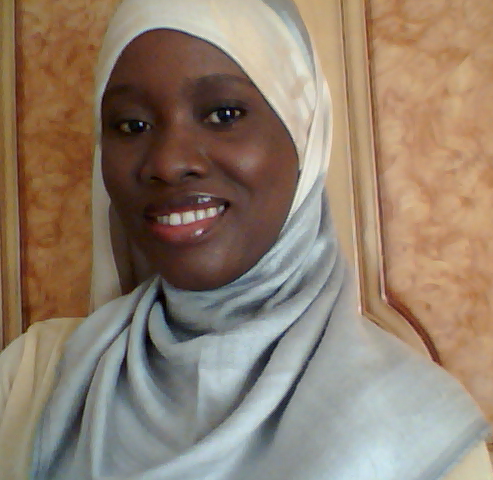

About Me
My name is Ndey awa Hydara, from Latrikunda Sabiji. I am the youngest in a family of three.
I'm medium in height and size. I have dark brown, medium long hair, black eyes and dark brown skin complexion.
I have one elder brother called Ebrima and one elder sister called Isha. I am a final year student presently attending the University of The Gambia and majoring Information Systems.
Am a very friendly and humble person that love to make friends with everyone. Among domestic animals I prefer cats to dogs because dogs can sometimes be very untame.
Je m'appelle Ndey awa Hydara, j'habbit a Latrikunda Sabiji. Je suis la plus jeune dans une famille de trois. J'ai un grand frere et une grande soeur. Je suis dans mon dernier semestre a l' Universite de Gambie en Informatique.
I like chatting with friends on the social media, finding about new knowledge and watching comedies that makes me laugh a lot.my favorite quote is The past is not a mistake but a good tool to carve the future
that is people should not be so much worried or feel deep regreted about their past mistakes but instead use it as a technique to make their future better.
Skills
- Project Mangement
- System Analysis and Design
- Database Systems
- Fluent in English, French and Wollof
- Java Programming Language
- PHP
- Html
- Bootstrap